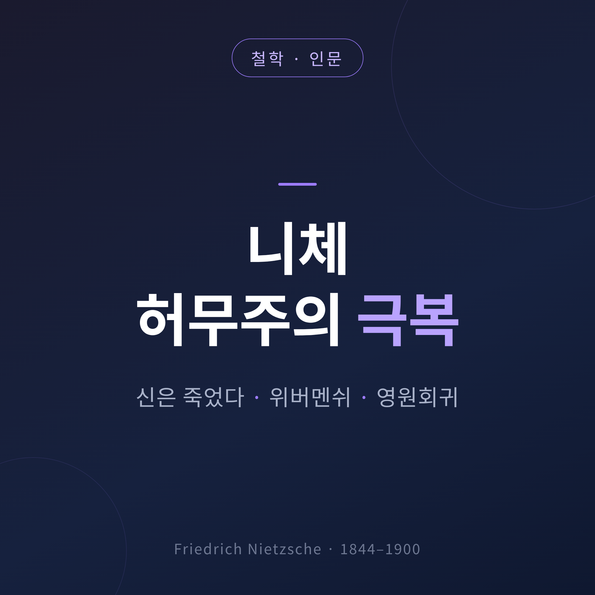
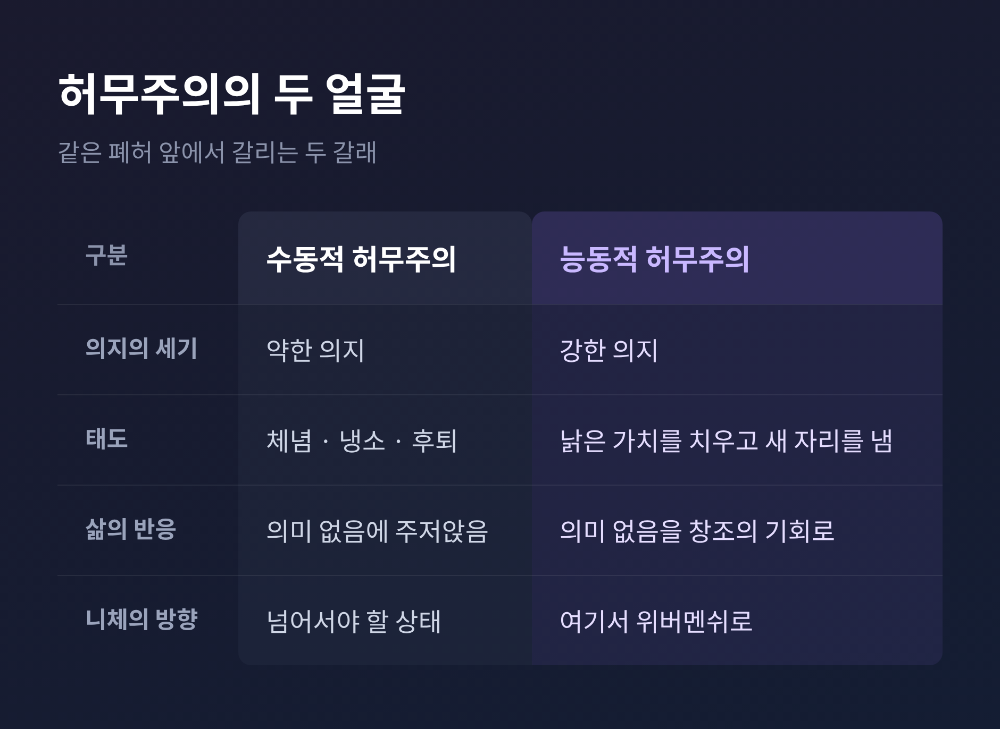
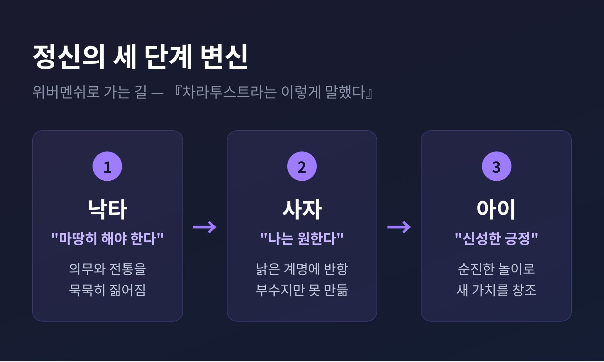
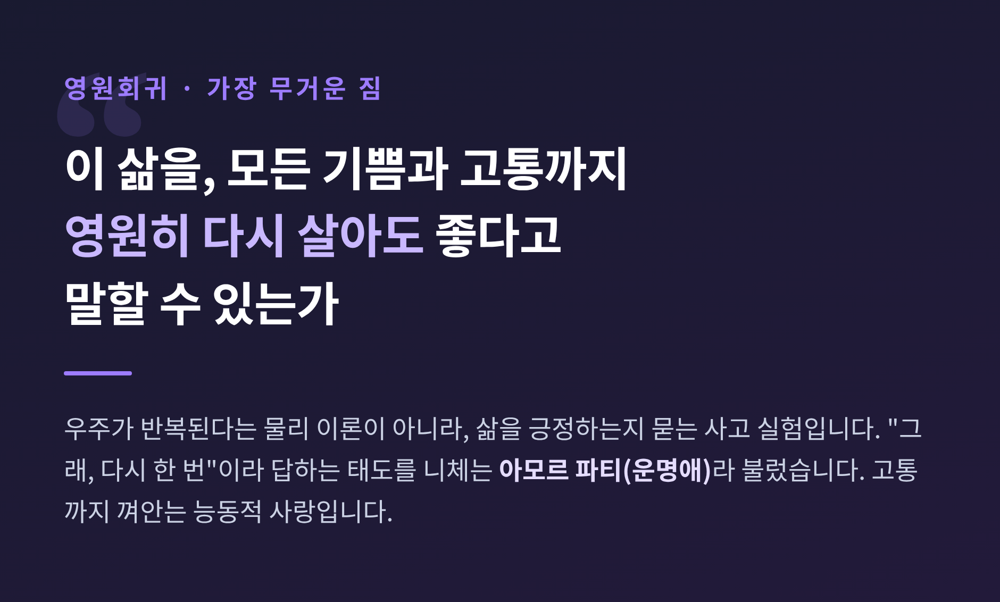
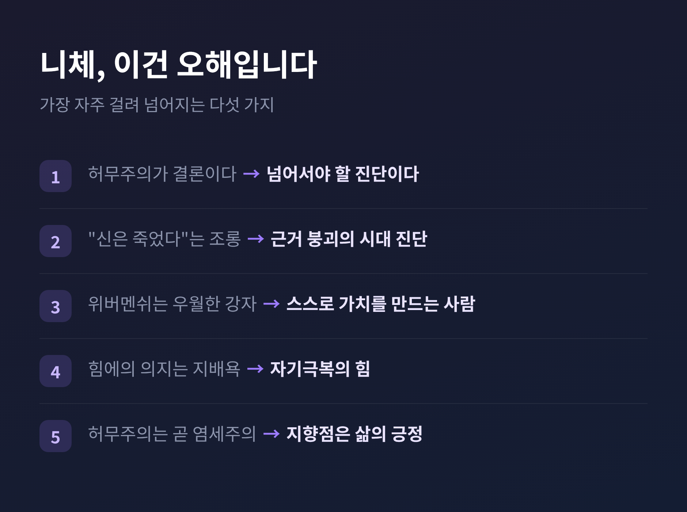

니체 허무주의 극복 — 신은 죽었다·위버멘쉬·영원회귀 정리
이번 글에서는 니체의 허무주의 극복을 정리해 보겠습니다.
먼저 결론부터 말씀드립니다. 니체는 허무주의자가 아닙니다. 그는 허무주의를 진단한 의사에 가깝습니다. “신은 죽었다”는 선언에서 시작해, 위버멘쉬와 영원회귀로 그 병을 넘어서려 했습니다. 이 세 개념을 차례로 짚으면 니체의 전체 그림이 보입니다.

■ “신은 죽었다”는 무신론 선언이 아닙니다
가장 오해받는 문장부터 짚겠습니다.
“신은 죽었다(God is dead)”는 니체가 신을 조롱한 말이 아닙니다. 무신론을 교리로 증명한 것도 아닙니다. 이 문장은 서구 문명의 상태를 가리키는 진단입니다.
출처는 『즐거운 학문』(1882)의 아포리즘 125번, 이른바 ‘광인의 우화’입니다. 한 광인이 밝은 대낮에 등불을 켜들고 시장으로 뛰어듭니다. “나는 신을 찾는다!”고 외칩니다. 사람들이 비웃자 그는 답합니다. “우리가 그를 죽였다 — 너희와 내가.”
여기서 신은 하나의 상징입니다. 오랫동안 서구 사회의 도덕과 의미, 진리를 떠받쳐 온 근거를 가리킵니다. 과학과 이성이 발달하면서 그 근거에 대한 믿음이 흔들렸습니다. 니체는 이 사건을 담담히 관찰한 것입니다.
문제는 그다음입니다. 사람들은 신을 더 이상 믿지 않으면서도, 신을 믿던 시절의 도덕과 목적은 그대로 붙들고 있습니다. 근거는 무너졌는데 그 위의 건물은 관성으로 서 있는 셈입니다.
광인이 절망하는 이유가 여기 있습니다. 그는 승리를 외치지 않습니다. 오히려 무엇이 무너졌는지 아무도 아직 모른다는 사실에 전율합니다.
■ 허무주의에는 두 얼굴이 있습니다
근거가 사라진 자리에 남는 것이 허무주의입니다. 삶에 정해진 의미가 없다는 감각입니다.
니체는 이 허무주의를 한 덩어리로 보지 않았습니다. 두 얼굴로 나눴습니다. 하나는 수동적 허무주의, 다른 하나는 능동적 허무주의입니다.
수동적 허무주의는 힘이 빠지는 쪽입니다. 전통적 가치가 힘을 잃은 것은 알지만, 새 가치를 만들 기운이 없습니다. 그래서 삶에서 물러납니다. 체념하고, 냉소하고, 손을 놓습니다. 니체는 이것을 약한 의지라고 불렀습니다.
능동적 허무주의는 반대쪽입니다. 낡은 가치가 무너진 것을 오히려 기회로 읽습니다. 무너진 자리를 치워 새것을 세울 공간으로 봅니다. 의미가 정해져 있지 않다면, 스스로 만들면 된다는 태도입니다. 니체는 이것을 강한 의지라 보았습니다.
같은 폐허 앞에서 한 사람은 주저앉고, 한 사람은 삽을 듭니다. 니체가 가리킨 방향은 물론 후자입니다.

■ 힘에의 의지는 남을 짓밟는 힘이 아닙니다
그렇다면 새 가치를 세우는 동력은 무엇일까요. 니체는 그것을 ‘힘에의 의지(Wille zur Macht)’라 불렀습니다.
이 개념도 오해가 깊습니다. ‘힘’이라는 단어 때문에, 남을 지배하고 짓밟는 의지로 읽히곤 합니다. 나치가 니체를 도용한 지점도 여기입니다.
하지만 학계의 해석은 다릅니다. 힘에의 의지는 타인에 대한 지배가 아니라, 자기 자신을 넘어서려는 근본 추동입니다. 저항을 이겨내며 성장하려는 생명의 힘입니다.
영어로 옮기면 그 차이가 분명해집니다. ‘power-over(남에 대한 힘)’가 아니라 ‘power-for(무언가를 위한 힘)’입니다. 어제의 나를 넘어서는 힘. 자기 한계를 밀어내는 힘. 니체가 말한 힘은 이쪽입니다.
솔직히 이 개념은 짧게 정리하기 어렵습니다. 니체 본인도 체계적으로 완성하지 못한 채 세상을 떠났고, 여동생이 유고를 편집하며 왜곡을 더했습니다. 그래서 오해가 오래 남았습니다. 다만 방향만은 분명합니다. 지배가 아니라 극복입니다.
■ 위버멘쉬는 슈퍼맨이 아닙니다
이 자기극복의 인간을 니체는 ‘위버멘쉬(Übermensch)’라 불렀습니다. 1883년 『차라투스트라는 이렇게 말했다』에 등장합니다.
번역이 오해를 키웠습니다. 초기 영역본이 이 말을 ‘Superman’으로 옮기면서, 만화 슈퍼맨이나 우월한 강자를 떠올리게 만들었습니다. 그래서 요즘은 ‘초인’이라는 번역을 피하고 원어 ‘위버멘쉬’를 그대로 쓰는 경우가 많습니다.
위버멘쉬는 남보다 강한 사람이 아닙니다. 물려받은 가치를 그대로 따르지 않고, 스스로 자기 가치를 창조하는 사람입니다. 저 너머의 천국이 아니라 이 대지의 삶에 의미를 부여하는 사람입니다.
니체는 이 인간에 이르는 정신의 성장을 세 단계 변신으로 그렸습니다. 낙타, 사자, 그리고 아이입니다.
낙타는 짐을 지는 단계입니다. “너는 마땅히 해야 한다”는 의무와 전통을 묵묵히 짊어집니다. 사자는 반항하는 단계입니다. “나는 원한다”고 외치며 낡은 계명에 맞섭니다. 다만 사자는 부술 수 있을 뿐, 새것을 만들지는 못합니다.
마지막이 아이입니다. 아이는 순진하게 놀며, 세상을 새로 시작합니다. 부정을 넘어 창조로 갑니다. 니체는 이 창조의 긍정을 ‘신성한 긍정’이라 불렀습니다.

■ 영원회귀 — 이 삶을 다시 살겠습니까
마지막 개념이 가장 무겁습니다. 영원회귀(Eternal Recurrence)입니다.
역시 『즐거운 학문』에 나옵니다. 어느 밤, 악마가 찾아와 속삭입니다. “네가 지금 사는 이 삶을, 모든 기쁨과 모든 고통을, 똑같은 순서로 영원히 다시 살아야 한다.”
여기서 오해 하나를 짚겠습니다. 이것은 우주가 실제로 반복된다는 물리 이론이 아닙니다. 대다수 해석은 이를 사고 실험으로 봅니다. 핵심은 그 말을 들었을 때 당신의 마음이 어떻게 반응하는가입니다.
만약 그 상상이 공포로 다가온다면, 지금 삶에 바꾸고 싶은 것이 있다는 뜻입니다. 반대로 “그래, 다시 한 번”이라고 답할 수 있다면, 당신은 삶을 온전히 긍정하고 있다는 뜻입니다.
니체는 이것을 가장 무거운 짐이라 불렀습니다. 그리고 그 무게를 견디는 것을 가장 큰 힘으로 보았습니다.
이 긍정의 태도에 니체는 이름을 붙였습니다. ‘아모르 파티(Amor Fati)’, 운명에 대한 사랑입니다. 흔히 아는 유행가 제목이 여기서 왔습니다. 다만 뜻은 조금 다릅니다. 그저 되는대로 살자는 체념이 아닙니다. 고통까지 포함해 내 삶 전체를 껴안고 “이대로 다시”라고 말하는 능동적 사랑입니다.

■ 흔히 걸려 넘어지는 오해들
니체는 오해를 많이 받는 철학자입니다. 몇 가지만 정리하고 넘어가겠습니다.
첫째, 허무주의는 니체의 결론이 아닙니다. 넘어서야 할 진단입니다.
둘째, “신은 죽었다”는 조롱이 아닙니다. 무너진 근거에 대한 시대 진단입니다.
셋째, 위버멘쉬는 우월한 강자가 아닙니다. 스스로 가치를 만드는 사람입니다.
넷째, 힘에의 의지는 지배욕이 아닙니다. 자기극복의 힘입니다.
다섯째, 허무주의는 염세주의와 다릅니다. 니체가 향한 곳은 비관이 아니라 삶의 긍정입니다.
예전엔 니체를 위험한 냉소가로 읽는 시선이 많았습니다. 지금은 전후 카우프만의 재평가 이후, 삶을 긍정한 사상가로 읽는 흐름이 자리 잡았습니다.

정리하면 이렇습니다.
니체의 길은 하나의 궤적을 그립니다. 신의 죽음으로 근거가 무너지고, 그 자리에 허무주의가 옵니다. 여기서 주저앉으면 수동적 허무주의입니다. 삽을 들면 능동적 허무주의입니다. 힘에의 의지로 낡은 가치를 치우고, 위버멘쉬가 되어 스스로 가치를 세웁니다. 그리고 영원회귀 앞에서 “다시”라고 답할 수 있을 만큼 삶을 긍정합니다.
니체가 남긴 요청은 냉소가 아니었습니다. “무너진 자리에서, 네 손으로 의미를 지어라.”
이 삶을 다시 살겠냐고 니체가 묻는다면, 우리는 무어라 답할 수 있을까요. 그 물음에 오래 머무는 일부터가, 이미 니체를 읽는 방식이라고 생각합니다.